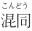

| アシク=ケリブ ロシアのおとぎ話 (アルトアーツ) | |
| ミハイル・レールモントフ | |
| (2017) | |
アシ ク= ケリブ
ミハイル・レールモントフ 著
西 周成 訳
ミハイル・ユーリエヴィチ・レールモントフ
（一八一四～一八四一） ピョートル・ザボロツキー画、一八三七年
昔々、チフリス [一] の 街 に、一人 の 裕福 なトルコ人が住んでいました。アッラーは彼にたくさん の 黄金 を与えましたが、彼にとっては黄金より も 一人娘 のマグ リ= メゲリのほうが大切でした。天の星々はきれいですが、その向こうには天使たちが住んでいて、彼らのほうがきれいです。それと同じようにマグ リ= メゲリはチフリスのどんな娘よりもきれいでした。
チフリスに は 貧 しいアシ ク= ケリブも住んでいました 。 預言者 は彼に 、 気高 い心と歌の才能のほかには何も与えませんでした。彼はサアズ （トルコの弦楽器） を 奏 でながら古代トルキスタンの勇士たち を 称 え 、 婚礼 の席 を 周 って金持ちで幸せな人々を楽しませていました。ある婚礼で彼はマグ リ= メゲリに会い、彼らはおたがいに恋におちました。貧しいアシ ク= ケリブには、彼女 と 一緒 になれ る 望 みはほとんどありませんでした、――そして彼は、冬の空のように悲しげになりました。
そんなある時、彼は庭のぶどうの木の下で横になっていて、とうとう眠り込んでしまいました。その時、マグ リ= メゲリが何人か女友だちを連れてそばを通りました。そして女友だちの一人が、眠ってい る 吟遊詩人 を見ると 、 離 れて彼に近づきました。
どうしてぶどうの木の下で眠っているの、――と彼女は歌い始めました――起きなさい 、 分別 のない人、あんたのガゼルがそばを歩いてゆくよ。
彼は目を覚ましました――娘はまるで小鳥のようにひらりと離れました。マグ リ= メゲリは彼女の歌を聞いて、彼女 を 叱 り始めました。
「もしあなたが――と彼女は答えて言いました、――誰に向かって私があの歌を歌ったか知っていたら、私 に 感謝 したでしょうね。あなたのアシ ク= ケリブなのよ」
「彼のところへ連れていって」と、マグ リ= メゲリは言いました。
それで彼女たちは行きました。彼の悲しげな顔を見て、マグ リ= メゲリは彼に理由をたずね、なぐさめ始めました。
「悲しまずにいられようか、――とアシ ク= ケリブは答えました、― ― 僕 は 君 を愛している。そして君 は 決 して僕のものにはならない」
「 お 父 様 に私との結婚を許してくださるようお願いして、――と彼女は言いました、――そうすればお父様はご自分のお金で私たちの結婚式 を 挙 げてくださるわ。そして私たち二人に足りるだけのお金を私にくださるわ」
「いいだろう、――と彼は答えました、― ― 仮 にアヤ ク= アガが自分の娘のためには何も惜しまないとしよう。だが後になって君が、僕には何もなかったしすべてが君のおかげだと言って僕 を 責 めないかどうか、どうして分かる？ だめだ、マグ リ= メゲリ、僕は自分の心 に 誓 いを立てた。七年のあいだ世界を旅して 、 富 をたくわえるか、さもなければ遠 い 荒野 で死ぬ。君がこれを承知するなら 、 期限 が来たら僕のものになってくれ」
彼女 は 承知 しましたが、も し 指定 の 期日 に彼が帰らなければ、彼女はずっと前から彼女 に 求婚 しているクルシュ ト= ベクの妻になるだろうとつけ加えました。
アシ ク= ケリブは自分の母親のところへ行きました。彼女か ら 道中 へ の 祝福 を得て、チフリスの街から出ました。するとそこに、馬に乗った男が彼を追ってきたではありませんか、――見ると、それはクルシュ ト= ベクでした。
「良い旅を！」と、ベクは大声で彼に言いました。 「 遍歴 の者よ、お前の行き先がどこだろうと 、 俺 はお前 の 仲間 だ」
アシクは自分の仲間ができてうれしくはありませんでしたが、どうしようもありません。彼らは長いあいだ一緒に行き、とうとう自分たちの前に川があるのを見つけました。橋 も 浅瀬 もありません。
「先に泳げ、――とクルシュ ト= ベクが言いました――俺はお前の後に続く」。アシクは上着を投げ捨て、泳ぎ始めました。川 を 渡 って後ろを見れば― ― 災 いなるかな！ 万能なるアッラーよ！――クルシュ ト= ベクは彼の服を取ると馬 を 駆 ってチフリスへもどって行き、た だ 埃 だけが彼の後ろで平らな野原の上 に 巻 き上がっていたのです。
チフリスに馬で駆けつけたベクは、アシ ク= ケリブの服を彼の年老いた母親のもとへ運んでいきます。
「お前さんの息子は深い川 で 溺 れたよ、――と彼が言います、――ほら、彼の服だ」
言いようのない悲しみのなかで母親は愛する息子の服の上にたおれ 、 熱 い 涙 をそれに注ぎかけました。その後、それらを持って自分 の 嫁 と呼ばれたマグ リ= メゲリのところへ持っていきました。
「私の息子が溺れてしまった」と彼女は言いました。「クルシュ ト= ベクが彼の服を持ってきた。あんたは自由だよ」
マグ リ= メゲリは、ほ ほ 笑 むとこう答えました。
「信じないで、それはみんなクルシュ ト= ベクの作り話よ。七年が過ぎるまでは、誰も私の夫にはならないでしょう」
彼女 は 壁 から自分のサアズを取ると 、 哀 れなアシ ク= ケリブのお気に入りの歌を、静かに歌い始めました。
そうこうするうち 、 裸足 で 裸 の旅人はある村に着きました。親切な人々が彼に服を着せ、食べ物をくれました。彼はそのお礼に、彼らにすばらしい歌を歌いました。そのように、彼は村から村へ、街から街へと遍歴し、彼 の 評判 はいたるところに知れ渡りました。彼はとうとうハラフ [二] に到着しました 。 習 わしに従ってコーヒー店に入り、サアズを貸してくれるよう頼んで歌い始めました。当時ハラフに は 民謡 の歌手が大好き な 総督 が住んでいました。彼のところへおおぜいが連れられていきましたが、――彼は誰も気に入りませんでした。彼のチャウシ（ トルコの 下僕）は街中を走り回り、へとへとになりました 。 突然 、彼らはコーヒー店のそばを通り過ぎながら、驚くべき声を聞きます。彼らはそこへと。
「俺たちと一緒 に 偉大 なパシャのところへ、――彼らはどなりました、――さもないと、お前には頭で責任を取ってもらうぞ！」
「僕は自由な人間、チフリスから来た旅人だ、――アシ ク= ケリブがそう言います、――行きたければ行くし、いやなら行かない。必要な時は歌う、――そして君たちのパシャは僕の指揮官じゃない」
しかし、それにもかかわらず彼は引っつかまれてパシャのところへ連れて行かれました、
「歌え」、とパシャが言いました。
そして彼は歌い始めました。そして彼は、その歌で自分の大切なマグ リ= メゲリをほめ称えました。そして誇り高いパシャはその歌をとても気に入り 、 哀 れなアシ ク= ケリブを自分のもとに残したのでした。
彼には金銀が振りかけられ、ぜいたくな服が彼の体の上 で 輝 き始めました。アシ ク= ケリブは幸せに 、 愉快 に生き始め、とても裕福になりました。彼が自分のマグ リ= メゲリを忘れたかどうか、私には分りませんが、ただ期限は切れそうでした。最後の年はもうすぐ終わるはずでしたが、彼は出発の準備をしていませんでした。
美しいマグ リ= メゲリは絶望し始めました。その時 、 隊商 を引き連れたある商人が、四十頭のラクダと八十人 の 奴隷 とともに、チフリスから出発しようとしていました。彼女は商人を自分のところへ呼びだし、彼に黄金の皿を与えます。
「この皿を持ってお行きなさい、――彼女は言います、――あなたがどの街に到着しても、自分の店にこの皿を並べなさい。そしてどこでも、私の皿の持ち主であること を 認 めてそれを証明した者は、皿にその重さと同じだけの黄金を加えて受け取れる と 宣伝 しなさい」
商人は出発し、マグ リ= メゲリ の 頼 みをどこでも実行しましたが、誰も自分が金の皿の持ち主だとは認めませんでした。もう彼は自分の商品をほとんど全部売ってしまい、残った物を持ってハラフに来ました。彼はどこでもマグ リ= メゲリ の 依頼 を宣伝しました。それを聞いたアシ ク= ケリブ は 隊商宿 にかけつけ、チフリス商人の店で金の皿を目にします。
「これは僕のだ！」と、彼はそれを片手で引っつかんで言いました。
「確かにお前のものだ、――と商人が言いました、――わしはお前だと分かったよ、アシ ク= ケリブ。早くチフリスへ行け、お前のマグ リ= メゲリがお前にこう言えと命じたのだ。期限は切れそうだ。そして、もしお前が指定の日に来なければ、彼女は別の男と結婚するだろうと」
アシ ク= ケリブは絶望して頭をかかえました。運命の日まで、あと三日しか残っていませんでした。それでも彼は馬に乗り 、 金貨 の入っ た 袋 を持って行きました――そして馬 を 容赦 なく駆りたてました。とうとう、よく走る馬はへとへとになり、アルジニヤンとエルズルム [三] とのあいだにあるアルジンガンの山 で 息 絶 えました。彼にはどうできたでしょう？ アルジニヤンからチフリスまで馬で二カ月かかるのに、残されたのはたった二日でした。
「 万能 のアッラーよ！」と彼は叫びました。「あなたがもし私を助けてくれなければ、もう私には地上ですることがありません！」
そして彼は、高 い 崖 から身を投げたいと思います。突然、下の方 に 白馬 に乗った男が見え、大きな声が聞こえるではありませんか。
「オグラン （若者の意） よ、お前は何をしたいのだ？」
「死にたいです」と、アシ ク= ケリブは答えました。
「ここへ下りてこい。もしそうなら、わしがお前を殺してやる」。アシクは何とか崖から下りました。
「わしについてこい」、馬上の人が大きな声で言いました。
「どうやってあなたについていけるでしょう、――とアシクが答えて言いました、――あなたの馬は風のように飛ぶのに、私には袋 が 重荷 です」
「そうだな。お前の袋をわし の 鞍 に 吊 るしてついてこい」。アシク＝ケリブはどんなに走って も 遅 れました。
「お前はどうして遅れるのだ？」と、馬上の人がたずねました。
「どうやってあなたについていけるでしょう。あなたの馬は思いより も 速 く、私 は 疲 れ果てています」
「そうだな。わしの馬の後ろに乗って、すっかり本当のことを言え。お前はどこへ行かねばならんのだ？」
「今はせめてエルズルムにでも間に合いたい」と、アシク＝ケリブは答えました。
「 眼 を閉じろ」
彼は閉じました。
「今度は開けろ」
アシクが見ると、彼の目の前に壁が白く見え、エルズルム の 尖塔 の数々 が 閃 きます。
「悪かった 、 アガ 、――とアシクは言いました、――私 は 間違 えました。私はカレに行かねばならないと言いたかったのです」
「それ見たか、――馬上の人は答えて言いました、――わしはお前に 、 純然 たる真実を言うよ う 警告 したぞ。また眼を閉じろ......。今度は開けろ」
アシクは、そこがカレだとは信じられませんでした。彼はひざまずいて言いました。
「悪かった、アガ。あなた の 僕 アシク＝ケリブは三 度 謝 る。しかしあなたも知っているだろう、人が朝か ら 嘘 をつこうと決めたら、一日が終わるまで嘘をつかなければいけない。私は本当はチフリスに行かねば」
「お前は何という当てにならんやつだ！」、馬上の人は怒って言いました。「だが、しかたがない、お前を許そう。眼を閉じるのだ。今度は開けろ」と、彼は一分後に言い足しました。
アシクは喜びで叫び声を上げました。彼らはチフリスの門 の 傍 らにいたのです。心から の 謝意 を 表 し、自分の袋を鞍から取ると、アシク＝ケリブは馬上の人に言いました。
「アガ、あなた の 恩 はもちろん、大きい。でも、もっと大きくしておくれ。もし今、私が一日でアルジニヤンからチフリスまで来るのに間に合ったと話したら、私の言うことを誰も信じないでしょう。私に何 か 証拠 をおくれ」
「身をかがめろ、――相手はほほ笑むとそう言いました、――そして馬のひづめから小さな土 の 塊 を取って、それ を 懐 に入れるのだ。そして、人々がお前の言うことを真実だと信じなかったら、目が見えなくなってもう七年になる女を自分のところへ連れてくるよう命じろ。彼女の眼にそれ を 塗 れば――彼女は目が見えるようになる」
アシクは白馬のひづめの下から土のかけらを取りましたが、頭を上げるとすぐ、――馬上の人と馬は消えました。その時彼は心の中で、彼 の 保護者 が他でもないハデリリアス （ 聖 ゲオルギウス） [四] だったこと を 確信 しました。
夜も遅くなってやっと、アシク＝ケリブは自分の家を探し出しました。彼はこう言いながら、ふるえる手 で 扉 をたたきます。
「アナ、アナ（お母さん）、開けて。僕 は 巡礼 の客です 。 凍 え て 空腹 です。お願いです、あなたの旅する息子を入れてください」 。 老女 の弱い声が彼に答えました。
「旅人 の 宿泊 には、裕福で強い人々の家があるよ。今、街で婚礼がある――そこへお行き！ そこで満足しながら一夜をすごせるよ」
「アナ、――彼は答えて言いました、――僕にはここに誰も知り合いがいません。なの で 繰 り返してお願いします。あなたの旅する息子のために、通してください！」
その時、彼の妹が母親にこう言います。
「お母さん、私が立って彼のために扉 を 開 けます」
「しかたのない子だね！」と老女は答えて言いました。「お前が喜んで若者たちを受け入れて彼らをもてなすのは、私が涙のせいで目が見えなくなってもう七年になるからさ」
しかし娘は彼女の非難には耳をかさず、立ち上がり、扉を開けてアシ ク= ケリブを入れました。ふつう の 挨拶 を言ってから、彼は座り、ひそか に 動揺 を感じながら周りを見回しました。そして壁に、ほこりだらけの袋に入って 、 妙 なる音をだす彼のサアズがかかっているのを見るのです。彼は母親にたずね始めました。
「 お 宅 の壁にかかっているのは何ですか？」
「 物好 きなお客さんだね、あんたは、――と彼女は答えました、――あんた に 一 切 れのパンをくれて 、 明日 は 無事 を祈って自由に行かせたら十分じゃないかい」
「もう言ったじゃないか、――と彼は反論しました、――あなたは僕 の 生 みの母で、これは僕の妹です。だから僕に説明してください、壁にかかっているのは何です？」
「それはサアズ、サアズさ」、老女は彼を信じずに、怒って答えました。
「では、サアズとは何です？」
「サアズというのは 、 弾 いて歌を歌うものさ」
するとアシ ク= ケリブは、妹がサアズを壁か ら 外 してそれを彼に見せること を 許 すよう、彼女に頼みます。
「だめだよ、――そう老女は答えました、――それは不幸な私の息子のサアズだから。もう七年のあいだ、それは壁にかかっていて、生きた人間は誰もそれに手 を 触 れなかったのだよ」
しかし、彼の妹は立ち、サアズを壁から外して彼に渡しました。すると彼は、天に眼を上げて、こんな祈りをしました。
「おお、万能のアッラーよ！ もしも私が望む目的 を 達 するはずなら、私 の 七 弦 のサアズは、私が最後にそれを弾いた日と同じように調和しているだろう！」。そして彼が銅 の 弦 をたたくと、弦は調和して語り始めました。そして彼は歌い始めました。「私は貧しいケリブ （ 乞食 ）――そして私の言葉は貧しい。だが偉大なハデリリアスは私がけわしい崖から下りるのを助けた、私が貧しく私の言葉も貧しいのに。私を分かってくれ、母よ、自分の旅人を」
その後、彼の母は泣きくずれ、彼にたずねました。
「あんたの名は何というの？」
「ラシッド（勇気ある者）」と彼は答えました。
「話すからには今度はお聞き、ラシッド、――と彼女は言いました、――お前さんは自分の話で私の心をばらばらに切 り 刻 んだよ。今日の夜を私は夢で見たものさ、自分の頭 が 白髪 になったのをね。それがもう七年、私は涙で目が見えなくなった。教えておくれ、彼の声を持つお前さん。私の息子はいつ来るんだい？」
そして二度、涙ながらに彼女は頼みました。彼は自分が息子だと名乗ったのですがむだで、彼女は信じませんでした。それでしばらくたって、彼はこう頼みました。
「お母さん、サアズを持って行くことを許してください。僕はこの近くで婚礼があると聞いています。妹が僕を連れて行ってくれます。僕は歌って弾いて、受け取るものは全部ここに持ってきてあなたたちと分けます」
「許さないよ、――と老女は答えました、――私の息子がいなくなってから、彼のサアズは家から出たことがないの」
しかし彼は、弦の一本さえ傷つけないと誓い始めました。
「もし弦の一本でも切れたら、――とアシクは続けました、――僕の財産で責任を取ります」
老女は彼の袋を手さぐりし、それら が 硬貨 で一杯になっていることを知ると、彼を行かせました。婚礼の宴会 で 騒 がしい裕福な家まで彼を連れてきた妹は、扉のそばに残って何が起きるか聞きました。
その家にはマグ リ= メゲリが住んでいました。そしてその夜、彼女はクルシュ ト= ベクの妻にならねばなりませんでした。クルシュ ト= ベクは家族や友人たちと宴会を開いていましたが、マグ リ= メゲリ は 豪華 なチャプラ（カーテン）の向こうで、片手 に 毒 の入っ た 杯 を、もう一つの手には短刀を持ち、女友だちと一緒に座っていました。彼女はクルシュ ト= ベク の 床 に頭を置く前に死ぬことを誓っていました。そして彼女は、チャプラの向こうから、見知らぬ男が来たことを知りました。彼は言いました。
「サラーム・アレイクム！ あなた方はここで楽しみ、宴会をなさっています。そこで貧しい旅人である私に、あなた方とご一緒することをお許しください。その代わり、私はあなた方のために歌を歌います」
「なぜいけない」と、クルシュ ト= ベクが言いました。「ここには歌い手 も 踊 り手も来なければならん。婚礼があるのだからな。何か歌ってみろ、アシク（歌手）よ。そうすれ ば 俺 はたっぷり一つかみの黄金を持たせて帰してやる」
その時、クルシュ ト= ベクは彼にたずねました。
「お前の名は何という、旅人よ？」
「シンデ ィ= ギョールルセス（すぐに分かりますよ）」
「その名前は何だ！」、相手は笑いながら大声でそう叫びました。「そんなのは初めて聞いた」
「私の母が私 を 孕 んで 、 出産 に苦しんでいた時、おおぜい の 隣人 が戸口に来てこう聞きました。神が彼女に与えたのは息子か娘か。人々は彼らにこう答えました――シンデ ィ= ギョールルセス（すぐに分かりますよ）。そういうわけで、私は生まれた時、その名を与えられたのです」
その後、彼はサアズを取って歌い始めました。「ハラフの街で、私はミスル [五] のワインを飲んだ。だが神は私 に 翼 をくれた。そして私は一日でここに飛んできた」
クルシュ ト= ベクの兄弟は頭の足りない男でしたが、こう叫んで短刀を引き抜きました。
「嘘をつけ！ どうやってハラフからここまで来られる？」
「どうして私を殺したいんだ？」とアシクは言いました。「歌い手たちはふつう 、 四方 すべてから一つの場所にやって来ます。そして私はあなた方から何も取りません、私を信じようと信じまいと」
「続けさせるがいい」 、 花婿 が言いました。そしてアシ ク= ケリブはまた歌い始めました。
「アルジニヤンの谷で私は朝 の 祈祷 をし、エルズルムの街 で 正午 の祈祷をした 。 日没 の前に、私はカレの街で祈祷をし、夜の祈祷はチフリスでした。アッラーは私に翼を与え、そして私はここへ飛んできた 。 願 わくは私が白馬の犠牲にならんことを。それは山から谷間へ、谷間から山へと 、 綱渡 り芸人のようにすばやく駆けた。マウリヤム （ 造物 主 ）はアシクに翼を与え、彼はマグ リ= メゲリの婚礼に飛んできた」
その時、マグ リ= メゲリは彼の声を聞き分け、毒を一つの方に、短刀を別の方 に 放 りだしました。
「こんなふうに自分の誓いをはたしたわけね」と、女友だちが言いました。「つまり、今夜あなたはクルシュ ト= ベクの妻になるの？」
「あなたは分らなかったけど、私は私 の 愛 しい声が分ったわ」と、マグ リ= メゲリは答えました。そして彼女は短刀を取り、チャプラを切 り 裂 きました。見てはっきりと自分のアシ ク= ケリブだと認めると、彼女は叫び、彼の首にとびつきました。そして二人とも気を失ってたおれました。
クルシュ ト= ベクの兄弟は、二人と も 刺 し殺そうと短刀を持って彼らにとびかかりましたが、クルシュ ト= ベクは小声でこう言って彼を止めました。
「心をしずめ、知れ。人間は、生まれた時 に 額 に書かれたことを通り過ぎることはできないのだ」
気がついたマグ リ= メゲリ は 恥 ずかしさで顔を赤らめ、片手で顔をおおってチャプラの向こう に 隠 れました。
「これでお前がアシ ク= ケリブだということがはっきりした、――花婿はそう言いました、――、だが話してくれ、お前がどうやってこれほど短い時間であれほ ど 広大 な空間をやってくることができたのだ？」
「真実の証拠として、――とアシ ク= ケリブが言いました、――僕のサーベルは石 を 断 ち 割 るだろう。もしも僕が嘘をついているなら、僕の首は髪の毛より細くなるがいい。でも何よりいいのは、七年のあいだこの世を見ていな い 盲目 の女を連れてきてください。そうすれば僕は彼女に視力をとりもどそう」
扉のそばに立っていたアシ ク= ケリブの妹は、そのような話を聞くと、母親のもとへ走ってゆきました。
「お母さん！」、彼女は叫びました。「あれは確かに兄さん、そして確かにあなたの息子アシ ク= ケリブよ」。そして老女の手を引いて、彼女を婚礼の宴会に連れてゆきました。
その時、アシ ク= ケリブは懐から土の塊を取りだし、それを水 で 薄 めて、こう祈りながら母親の眼に塗りました。
「みな知るがいい、ハデリリアスがどれほど強く偉大かを」。すると彼の母親は目が見えるようになりました。それからは、誰も彼の言うことが本当かどう か 疑 おうとしませんでした。そしてクルシュ ト= ベクは、美しいマグ リ= メゲリ を 黙 って彼 に 譲 りました。
するとアシ ク= ケリブは喜んで彼に言いました。
「聞けよ、クルシュ ト= ベク、僕が君をなぐさめてやろう。僕の妹は君の前 の 花嫁 と同じくらいきれいで、僕は金持ちだ。彼女は同じくらい金や銀を持ってくるだろう。だから、彼女を自分の妻にしろ――そうすれば僕が自分のマグ リ= メゲリと一緒に幸せになるように、幸せになるだろう」
アシ ク= ケリブ
二〇一七年二月一日 キンドル版発行
著者 ミハイル・ユーリエヴィチ・レールモントフフ
訳者 西 周成
発行所 合同会社アルトアーツ
公式サイト http://www.alt-arts.co m
[一] トビリシ（グルジアの首都）の
[二] ハラフ（ハラブ、ハルパ）は、ハレバ（アレッポ）の古名。シリアの北西部の街。一五一六年にオスマン・トルコに された。
[三] エルズルムはトルコ東部の都市。
[四] ハデリリアス（ハドリリアス）はイスラムの預言者で、その名前は、預言者ヒドルの が預言者イリヤ（イリアスはこの名のアゼルバイジャン語の形）に乗り移ったという を伝えている。レールモントフは主人公を助けたのがキリスト教の ゲオルギウスだと説明しているが、これはしばしばハデリリアスと聖ゲオルギウスの  が見られるアルメニアとグルジアの民話に されたからだという。「タルハヌィ」ロシア国立レールモントフ博物館公式サイトの以下のＵＲＬを参照。 http://www.tarhany.ru/lermontov/proizvedenija/ashik_kerib
[五] アラビア語でエジプトの意。